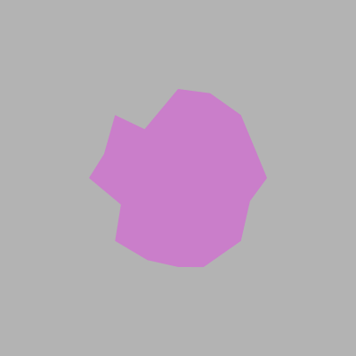
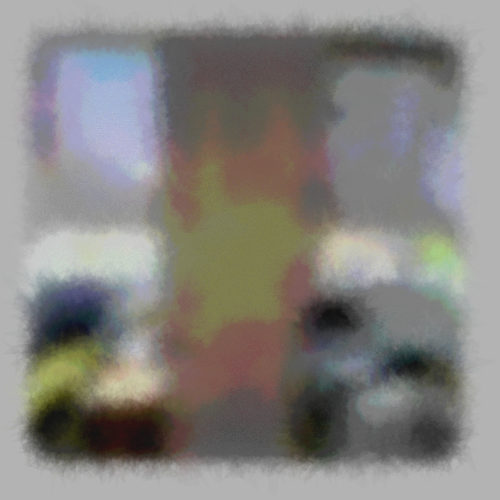

Final Project: Water Color filter
In this project I try to develop my own "Water Color" filter that will take a photo and try to make an artistic rendition of that photo.
For example a type of art I would be trying to imitate would be "Impressionist style art":

My approach breaks down into two main categories: generating a water color stroke and using water color strokes to paint an image.
Generating a water color stroke
A lot of the ideas of how to simulate water color take from Tyler Hobbs. However, my implementation is original.
Generating a polygon
A water color stroke is essentially a distorted and layered polygon. Our first step is to just make a simple polygon on a blank canvas.
In my implementation a polygon is just a list of points that generates from a radius, amount of sides and an origin point.
Here is our constructor implementation:
def __init__(self, radius, sides, x, y):
self.points = self.__create_points(radius, sides, x, y)
In order to generate a polygon we take the idea that the angle between each point is (pi * 2) / sides.
This means that we can take an arbitrary point as where i is the point we want to generate
newX = x + (radius * math.cos(angle * i))
newY = y + (radius * math.sin(angle * i))From this we can make a method that generates a polygon:
def __create_points(self, radius, sides, x, y):
points = []
angle = ((math.pi * 2) / sides)
points.append(Point(x + radius, y))
for i in range(1, sides):
newX = x + (radius * math.cos(angle * i))
newY = y + (radius * math.sin(angle * i))
points.append(Point(newX, newY))
return points
Now we can draw this polygon on a blank canvas:
Distorting a polygon
Now we want this polygon to represent a watercolor stroke or "splotch". We want to distort the sides of the polygon.
We do this by making a new random midpoint for each side.
For randomness we use a Gaussian distribution as a sample of possible points.
class Point:
def apply_random_gauss(self, sigma = 10):
self.x = random.gauss(self.x, sigma)
self.y = random.gauss(self.y, sigma)
We do this for each side to get a distorted polygon.

We do this 6 times to create more water type noise.
Layering polygons
When we have a water stroke majority of the paint focuses in the center while the ends are less opaque. In order to accomplish affect we can layer multiple distorted polygons on top of each other and lower the opacity of each polygon.
This gives us a pretty nice water color stroke affect:
Using water color on an image
In order to accomplish a watercolor affect on an image taken with a camera we have to divide the image into tiles and paint a water color stroke the average color of the tile.
Dividing an image into tiles
We want to divide our image into a list of "tiles". A tile is just going to be a group of pixels within a certain area.
We can do this with the following python code:
tile_size = 20
tiles = []
for i in range(0, img.shape[0], tile_size):
for j in range(0, img.shape[1], tile_size):
tiles.append(img[i:i+tile_size, j:j+tile_size, :])Now we have a list of tiles.
Drawing watercolor for each tile
Now we iterate through the list of tiles and draw a water color splotch for the average color of each tile.
num_tile = 0
for i in range(50, img.shape[0] + 50, tile_size):
for j in range(50, img.shape[1] + 50, tile_size):
avgcolor = color.get_avg_color(tiles[num_tile])
# Write blob of average color at (i, j)
num_tile += 1This gives us an abstracted water color painting of an image.
Different Parameters and Conclusion
There are two main parameters we can change:
- The amount of distortions in the polygon (how watery/random the stroke is)
- The size of the tile (how "abstract" the painting is)
Different distortion levels
0 distortions (just octagons)
2 distortions
6 distortions
Different tile size

Tile size of 150*150 pixels:
Tile size of 30*30 pixels:
Tile size of 5 * 5 pixels:
Where watercolor does not work as well
Things with boring colors (like walls)

Things with lots of details

My favorite pictures
Things with water:

Flowers and plants with simple colors:
Landscapes: